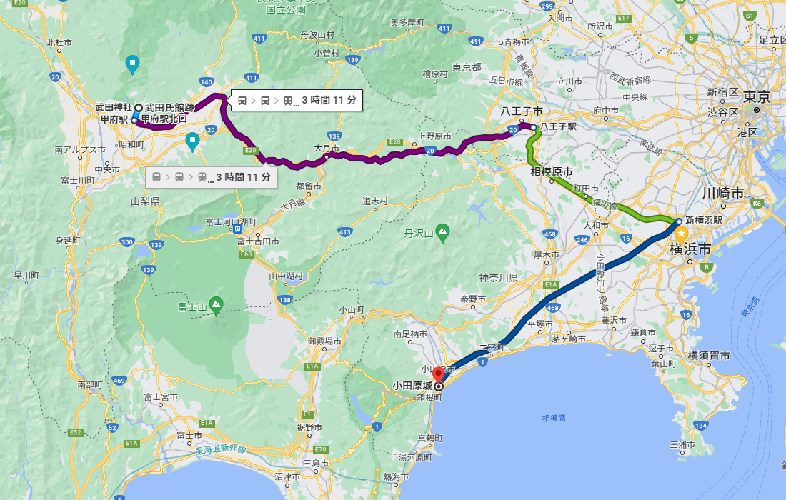
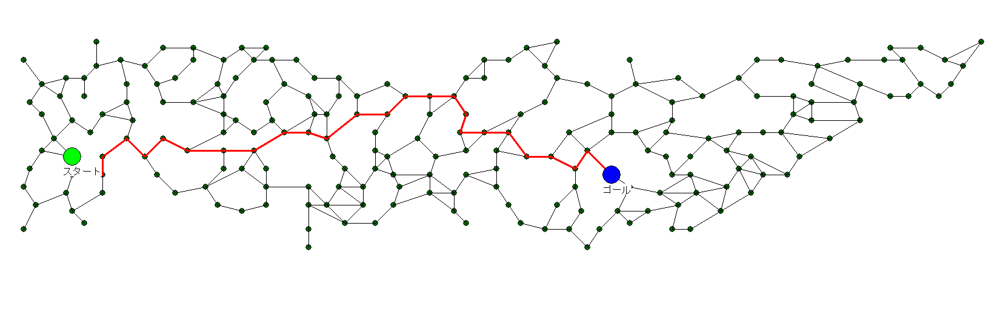

経路探索といえば、Google Map を思い浮かべる人がいるかと思います。

なぜ躑躅ヶ崎館(武田氏館後）から小田原城に直線で線が引かれないのでしょうか？
─── 富士山もあり、そこにまっすぐと移動するような道が存在しないためです。
(仮に存在したとしてもまともに移動できない)
自勢力の城とその他の自勢力の城は、街道で「連結」されます。
街道で結ばれていても街道の途中に他勢力の城が介在する場合は、「連結されていない」ことになります。
軍団は、「連結」されている城から収入を得ることができます。
通常「グラフ」という言葉を聞くと、「棒グラフ」や「円グラフ」を思い浮かべると思いますが、
ゲーム制作において、「グラフ」とは、一般的に、
経路グラフのことを示します。
(道のような経路に限らず、状態遷移が矢印で繋がったような、いわゆる「点項目(ノード)」が「矢印線(エッジ)」で繋がっているものの総称です。)
ScenarioModには、この経路グラフ関連の関数が提供されています。

番号リスト型 clist = Get_経路連結の隣接城番号リスト【配列用】( int iCastleID );
番号リスト型 clist = Get_経路連結の隣接城番号リスト【配列用】( 城配列番号::躑躅ヶ崎館 ); // 躑躅ヶ崎館の周囲に隣接していて、道で繋がっている城一覧
for each ( int iCastleID in clist ) {
デバッグ出力 << Get_城名(iCastleID) << ",";
}
デバッグ出力 << endl;
Set_城経路グラフ初期化();
番号リスト型 clist = Get_経路連結の隣接城番号リスト【配列用】( int iCastleID );
Set_城経路グラフ初期化(); // 経路グラフを現在実行中の城位置に合わせて再構築しなおす。MapDataObgkModなど、ゲーム中に城の位置を変えているものへの対処
番号リスト型 clist = Get_経路上の城番号リスト【配列用】( 城配列番号::躑躅ヶ崎館, 城配列番号::月山富田城 ); // 躑躅ヶ崎館 から 月山富田城まで
for each ( int iCastleID in clist ) {
デバッグ出力 << Get_城名(iCastleID) << ",";
}
デバッグ出力 << endl;
先述の経路探索をする前に、「探索対象にしたくない城」を複数削除することができます。
Set_城経路グラフから城削除( int iCastleID );
Set_城経路グラフ初期化(); // 経路グラフを現在実行中の城位置に合わせて再構築しなおす。MapDataObgkModなど、ゲーム中に城の位置を変えているものへの対処
Set_城経路グラフから城削除( 城配列番号::尾高城 ); // 尾高城は探索対象にしない。
Set_城経路グラフから城削除( 城配列番号::上原城 ); // 上原城は探索対象にしない。
番号リスト型 clist = Get_経路上の城番号リスト【配列用】( 城配列番号::躑躅ヶ崎館, 城配列番号::月山富田城 ); // 躑躅ヶ崎館 から 月山富田城まで
for each ( int iCastleID in clist ) {
デバッグ出力 << Get_城名(iCastleID) << ",";
}
デバッグ出力 << endl;
forループなどで、自勢力以外の城を全て 「Set_城経路グラフから城削除」で削除 してしまえば、
経路探索は、「自勢力の城を使ったもの」となるわけです。
Set_城経路グラフ初期化(); // 経路グラフを現在実行中の城位置に合わせて再構築しなおす。MapDataObgkModなど、ゲーム中に城の位置を変えているものへの対処
Set_城経路グラフから城削除( 城配列番号::門司城 ); // 九州の、門司城を削除
Set_城経路グラフから城削除( 城配列番号::松葉城 ); // 四国の松葉城を削除
番号リスト型 clist = Get_経路上の城番号リスト【配列用】( 城配列番号::室町御所, 城配列番号::種子島城 ); // 室町から種子島
if ( clist.size() < 2 ) {
// 経路が求まったのであれば、少なくとも「開始城」と「終了城」がリストに入っている。
// ２つ未満ということは経路が求まらなかったということ。
デバッグ出力 << "経路が求まらない" << endl;
} else {
for each ( int iCastleID in clist ) {
デバッグ出力 << Get_城名(iCastleID) << ",";
}
デバッグ出力 << endl;
}
「城Ａ から 城Ｂ への経路探索」に関する主な所は以上となります。 詳しくは「城情報型.h」などを参照してください。